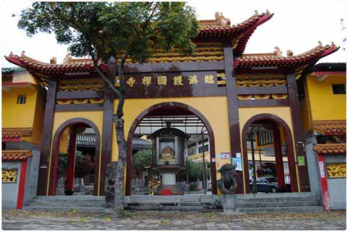
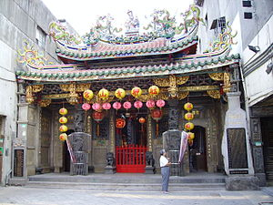

廟 宇 簡 介
- 霞海城還廟
- 護國禪寺
- 劍潭古寺
- 關渡宮
- 天后宮
- 慈祐宮
- 保安宮
- 青山宮
- 奉天宮
- 清真寺
- 福佑宮
- 碧山巖
松山霞海城隍廟位於台灣台北市八德路，為主祀霞海城隍的道教廟宇。該廟宇興建於1892年，為位於台北松山區的多進式傳統建築廟宇。松山霞海城隍廟興建於道光年間 (西元1820年) 迄今已有185年之歷史，是台灣少數擁有100年以上的道教寺廟，本廟供奉主神為城隍老爺，陪祀觀世音菩薩、五路財神、月下老人、地藏王菩薩、福德正神、文武判官等諸位神祇，城隍老爺專管人世間善惡是非，原係大陸福建省泉州府同安縣下店鄉海邊庄鎮守之神明，於明朝武宗皇帝在正德年間 (西元1505年) 御賜「臨海門」改稱霞海城隍廟而得名。

臨濟護國禪寺就廟宇組織言，全名為財團法人台北市臨濟護國禪寺，是主祀釋迦牟尼的財團法人。就古蹟言則是位於圓山遺址旁的台北市市定古蹟。始建於1900年，完工於1911年，1912年6月21日舉行落成佛像安座大典；為台灣日治時期初期，日本僧人梅山玄秀（梅山得庵）禪師所建。他當時受第四任台灣總督兒玉源太郎之邀來台弘法佈教，是台灣唯一冠以護國之名的佛寺。兒玉總督曾作〈寄圓山鎮南山〉之七言詩以茲紀念。
劍潭古寺位於台灣台北市中山區北安路，為主祀觀音之佛教廟宇。該廟宇整建於台灣鄭氏王朝，本位於劍潭山附近。因為日治時期興建台灣神社及敕使街道等原因，於1937年遷移整建至現址。2000年代，劍潭古寺因為極具歷史保存價值，特由台北市政府宣佈為市定歷史建築。
北投關渡宮，位於中華民國（臺灣）臺北市北投區關渡，為主祀天上聖母媽祖之道教、佛教廟宇，為北台灣歷史最悠久、香火最鼎盛的媽祖廟之一，關渡宮一度與北港朝天宮、鹿港天后宮合稱「台灣三大媽祖廟」。清順治十八年（南明永曆十五年，1661年），臨濟宗時期由高僧開山石興和尚從福建興化府莆田縣湄洲島請來媽祖香火來台，以茅草建屋，奉祀於干豆（關渡）山區，人稱「靈山廟」。
台北天后宮，原名新興宮，俗稱西門町媽祖廟、西門町天后宮，主祀天上聖母媽祖，現位於台灣台北市萬華區成都路51號，廟址原為日本佛教真言宗之弘法寺。
原址為艋舺直興街（今貴陽街與西園路交叉口，青山王館附近），肇建於清乾隆十一年（1746年），與艋舺龍山寺和艋舺祖師廟並稱臺灣清領時期艋舺三大廟門。
松山慈祐宮，俗稱「松山媽祖廟」，主祀天上聖母的道教廟宇，該廟宇為祖籍福建同安人士的信仰中心，位於台灣台北市松山區八德路四段的大型傳統廟宇。鄰近有饒河街夜市、松山車站，未來有台北捷運松山線行經。松山媽祖廟座北朝南，廟貌宏偉巍峨，共六層樓，佔地六百餘坪，有圖書館供學子專修，並熱心社會福利活動，曾被列為第三級古蹟，而後因正殿失火，僅有神祇座像完好無缺，因此廟方向政府申請撤銷古蹟的認定。


艋舺青山宮，俗稱青山王廟、青山王館。位於臺灣臺北市萬華區貴陽街2段218號，為落成於1859年的道教及臺灣民間信仰廟宇，主祀青山靈安尊王。自臺灣清治時期以來，該廟宇就艋舺地區泉州三邑人的宗教信仰中心。1985年因其歷史重要性，被內政部指定為國家三級古蹟。
松山奉天宮，位於臺灣臺北市信義區福德街，為主祀玉皇大帝之道教廟宇。該廟宇興建於1954年，為位於臺北信義區的大型多進之傳統建築廟宇。同治元年（1862年）虎山居一唐山客，樹立紅綾，上書「玉皇上帝暨列位尊神」，作為玉帝神位，焚香膜拜，以求平安，當地民眾皆往奉祀。臺灣日治時期受到破壞，1954年，當地信眾建廟奉祀玉皇，時稱「天公廟」，1959年改稱「奉天宮」，1967年與主奉五年千歲之「開安宮」合併，定名松山奉天宮。
清真寺為穆斯林日常禮拜與進行宗教活動的中心，故全世界舉凡有穆斯林聚居之處，均建有清真寺，充分發揮宣揚教義，教化社會之功能。民國40年代，政府積極拓展對外邦交，與世界回教國家往來頻仍，為因應外交接待需要，由當時之外交部長葉公超先生倡議發起擴建台北清真寺，並由我國與中東友邦國家共同籌募興建，於民國49年4月13日，舉行落成典禮，為我國政府重視回教與世界回教國家友好合作之具體象徵。
台北市福佑宮，位於台北市大安區安東街23號，即太平洋崇光百貨後方，是間主祀福德正神的小型傳統廟宇。
碧山巖開漳聖王廟位於台灣台北市內湖區碧山之尖峰，也稱「尖頂開漳聖王廟」。廟內奉祀開閩民族英雄陳元光及其部屬李伯瑤、馬仁兩位將軍。陳元光唐末開拓福建漳州地方，被視為漳州人守護神，並尊稱「開漳聖王」。碧山巖是台灣最大的開漳聖王廟之一，香火鼎盛。